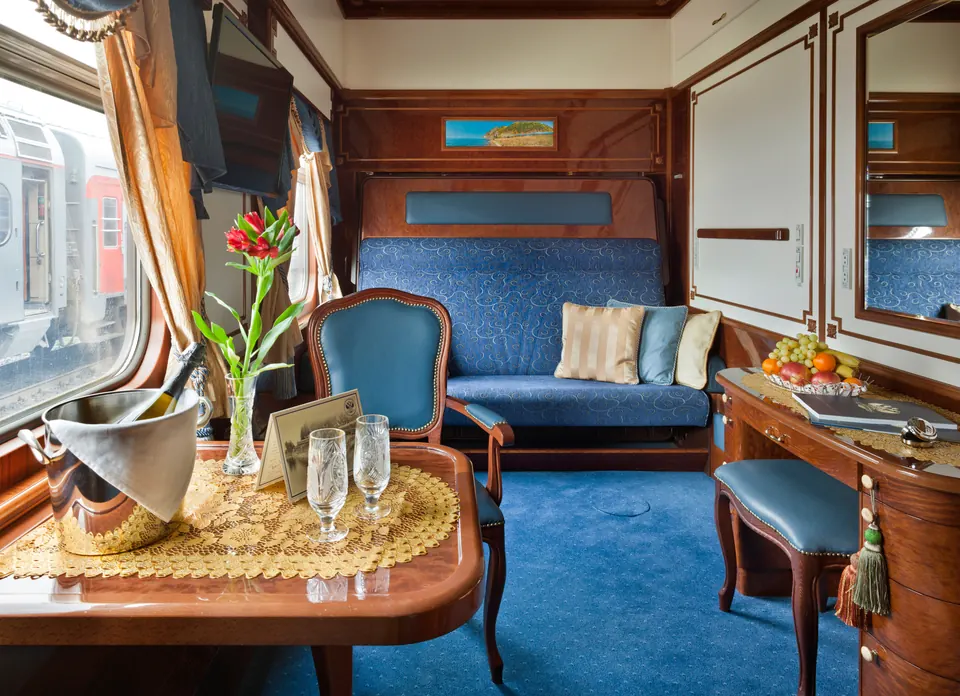
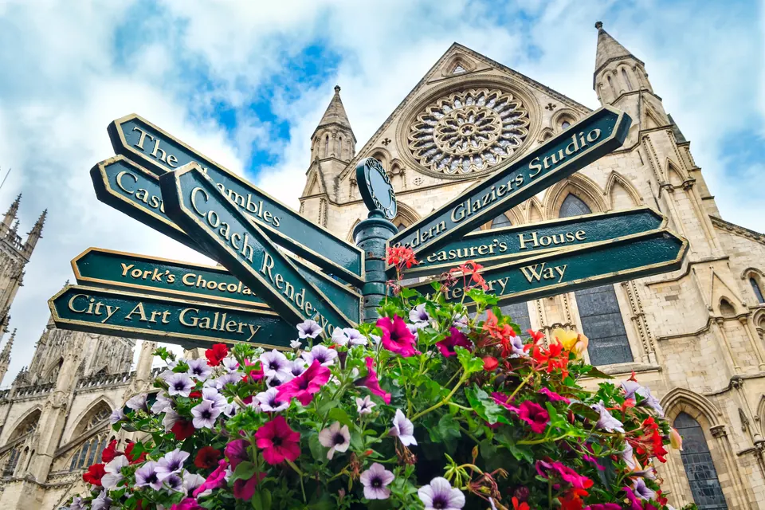
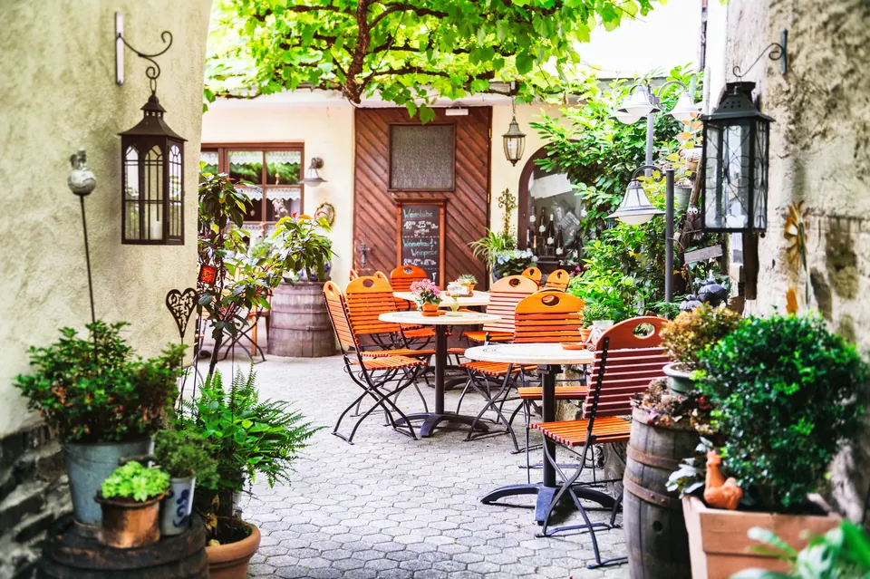
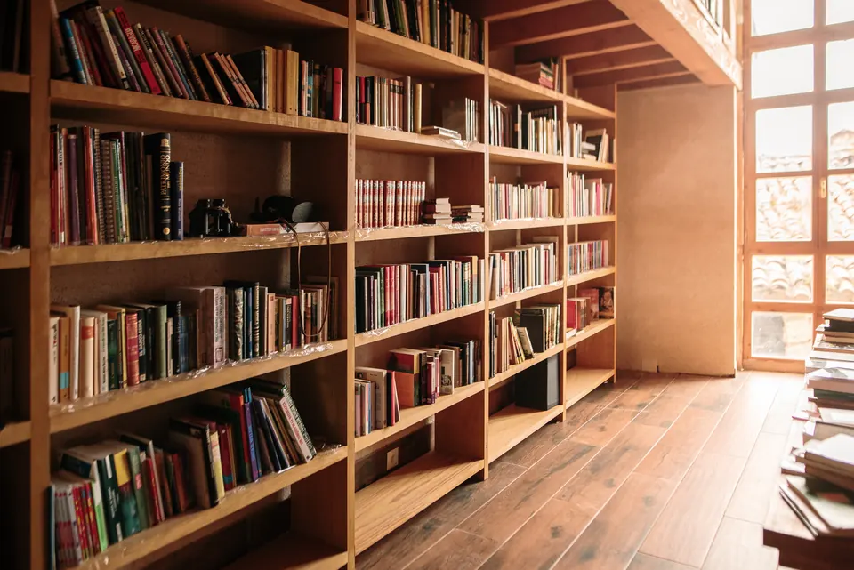
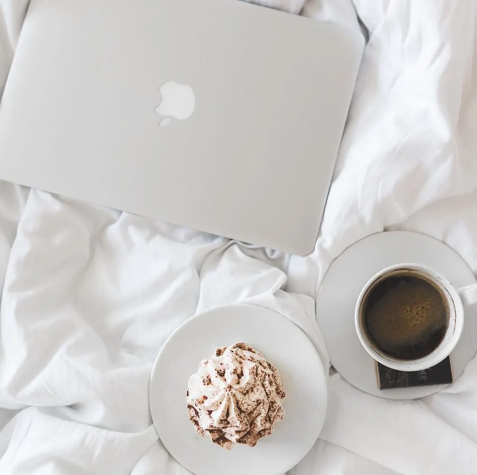
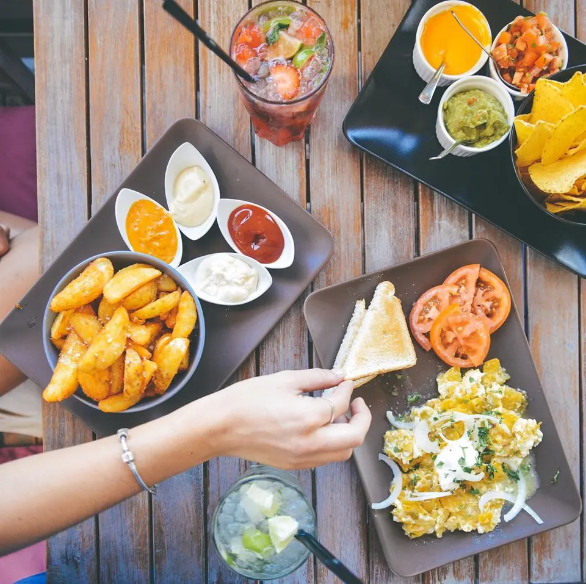

The romance of arriving by rail
A future field note on slow travel, beautiful cabins, and the pleasure of watching a story change outside the window.
A literary travel journal
If there’s a book or a letter in a faraway place, I’ll find it.
Welcome
A journey through beautiful bookstores, captivating museums, charming post offices, and the homes of authors and creatives.
Girl in a Bookstore follows Rachel Reynolds as she looks for the literary life hiding in plain sight. The journal brings together adventurous travel, personal essays, vibrant video, memorable tables, and — always — books.
Think of this as a field notebook for the curious: equal parts itinerary, reading list, and invitation to look more closely.
Read Rachel’s storyBegin anywhere
Three ways into the journal: follow the road, pull up a chair, or lose an afternoon between the shelves.

Bookstores, museums, writers’ rooms, post offices, and every worthy detour.

Café tables, market finds, and the meals that make a place memorable.

Reading notes, beautiful editions, and books chosen for the journey.
From the notebook
The opening stories are being written. Here’s what’s taking shape on Rachel’s desk.

A future field note on slow travel, beautiful cabins, and the pleasure of watching a story change outside the window.

A stack selected for long platforms, unhurried mornings, and that particular hush after the dining car closes.

Because the best travel memories often begin with a menu you can’t quite translate and a seat by the window.